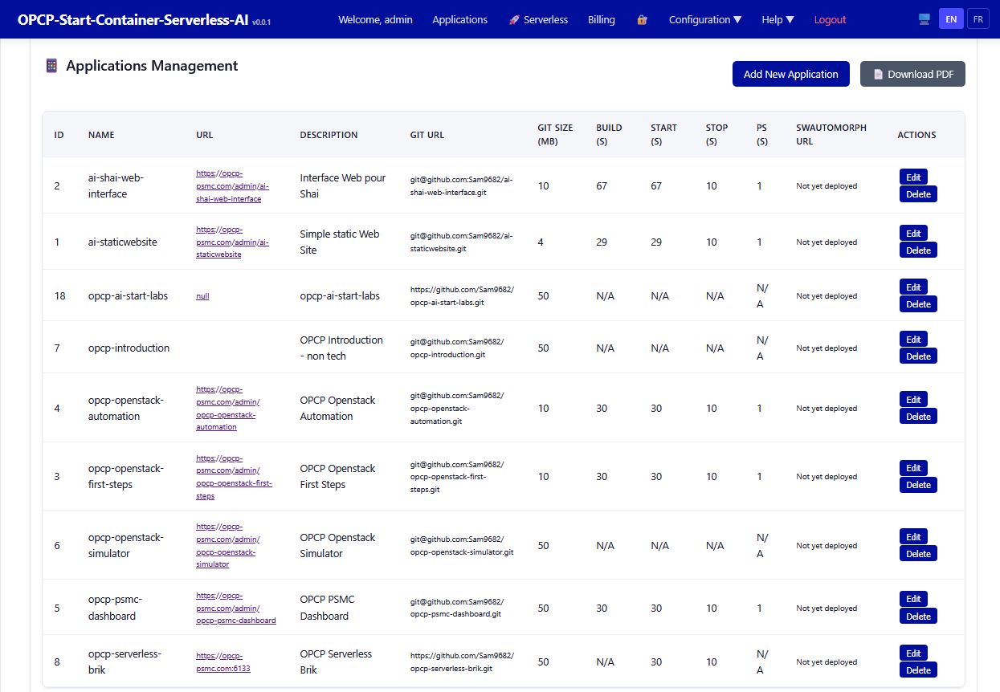

Ajout de nouvelles applications
Apprenez à enregistrer et déployer des applications sur la plateforme AI-Powered-Store en utilisant le CLI, l'API REST et l'interface web d'administration.
Prérequis
- Terminé : Installation sur Ubuntu Bare-Metal
- Instance AI-Powered-Store en fonctionnement
- Accès administrateur à l'interface web
Ce que vous apprendrez
- Enregistrement d'applications via le CLI (
aipoweredstore_cli.py) - Enregistrement d'applications via l'API REST
- Enregistrement d'applications via l'interface web
- Configuration des métadonnées d'application
- Gestion des applications existantes (édition, suppression)
Interface de gestion des applications
L'interface web d'administration fournit un tableau complet listant toutes les applications enregistrées sur la plateforme. Accessible via le menu Applications dans la barre de navigation.

Colonnes du tableau
Chaque application enregistrée affiche les informations suivantes :
| Colonne | Description |
|---|---|
| ID | Identifiant unique de l'application dans la base de données |
| NAME | Nom technique de l'application (ex : ai-shai-web-interface, opcp-ai-start-labs) |
| URL | URL publique d'accès à l'application une fois déployée (ex : https://opcp-psmc.com/admin/ai-staticwebsite) |
| DESCRIPTION | Description lisible de l'application (ex : « Interface Web pour Shai », « OPCP Openstack Automation ») |
| GIT URL | URL du dépôt Git source (ex : git@github.com/Sam9682/ai-shai-web-interface.git) |
| GIT SIZE (MB) | Taille du dépôt Git en mégaoctets |
| BUILD (S) | Temps de build en secondes (N/A si non encore construit) |
| START (S) | Temps de démarrage en secondes |
| STOP (S) | Temps d'arrêt en secondes |
| PS (S) | Temps de vérification du statut (process status) en secondes |
| SWAUTOMORPH URL | URL de déploiement Swautomorph (« Not yet deployed » si non déployée) |
| ACTIONS | Boutons Edit et Delete pour gérer l'application |
Actions disponibles
- Add New Application — Bouton en haut à droite pour enregistrer une nouvelle application
- Download PDF — Exporter la liste des applications au format PDF
- Edit — Modifier les métadonnées d'une application existante (nom, URL, description, dépôt Git)
- Delete — Supprimer une application de la plateforme
Méthode 1 : Ajout via l'interface web
C'est la méthode la plus simple pour les administrateurs :
- Connectez-vous à l'interface d'administration
- Accédez au menu Applications dans la barre de navigation
- Cliquez sur le bouton Add New Application
- Remplissez le formulaire avec les informations requises :
- Name : nom technique (sans espaces, en minuscules)
- Description : description lisible
- URL : URL publique d'accès
- Git URL : URL du dépôt source
- Validez le formulaire
Méthode 2 : Ajout via le CLI
Le script CLI permet d'enregistrer des applications en ligne de commande :
# Activer l'environnement virtuel
cd ~/opcp-ai-powered-store
source .venv/bin/activate
# Enregistrer une nouvelle application
python aipoweredstore_cli.py add-app \
--name "mon-application" \
--description "Description de mon application" \
--git-url "git@github.com/user/mon-application.git" \
--url "https://mon-domaine.com/admin/mon-application"Méthode 3 : Ajout via l'API REST
L'API REST permet l'intégration dans des pipelines CI/CD :
# Enregistrer une application via l'API
curl -X POST https://<votre-domaine>/api/applications \
-H "Content-Type: application/json" \
-H "Authorization: Bearer <votre-token>" \
-d '{
"name": "mon-application",
"description": "Description de mon application",
"git_url": "git@github.com/user/mon-application.git",
"url": "https://mon-domaine.com/admin/mon-application"
}'Exemples d'applications de la plateforme
Voici des exemples d'applications typiques enregistrées sur la plateforme :
- ai-shai-web-interface — Interface Web pour OVH Shai (taille : 10 MB, build : 67s)
- ai-staticwebsite — Site web statique simple (taille : 4 MB, build : 29s)
- opcp-ai-start-labs — Labs de démarrage IA (taille : 50 MB)
- opcp-openstack-automation — Automatisation Openstack (taille : 10 MB, build : 30s)
- opcp-psmc-dashboard — Tableau de bord PSMC (taille : 50 MB, build : 30s)
- opcp-serverless-brik — Brique serverless (taille : 50 MB)
Modification d'une application existante
Pour modifier les métadonnées d'une application existante :
- Localisez l'application dans le tableau
- Cliquez sur le bouton Edit dans la colonne ACTIONS
- Modifiez les champs souhaités dans le formulaire d'édition
- Sauvegardez les modifications
Suppression d'une application
- Localisez l'application dans le tableau
- Cliquez sur le bouton Delete dans la colonne ACTIONS
- Confirmez la suppression dans la boîte de dialogue
Exercices
Cette leçon comprend des exercices pratiques en laboratoire :
- Enregistrer une nouvelle application via l'interface web
- Modifier la description d'une application existante
- Exporter la liste des applications en PDF
- Enregistrer une application via le CLI